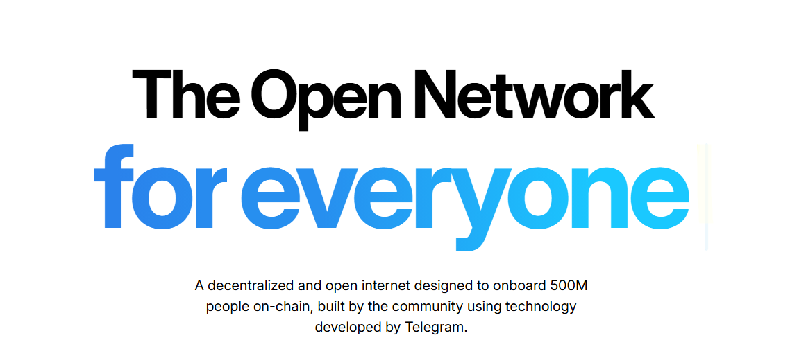

TON supports staking through validator (nominator) pools. Holders deposit TON to a pool contract and receive a share of validation rewards, minus pool fees. This guide focuses on practical steps to stake safely, understand rewards, and plan for unstaking.
Ways to Stake TON
You can stake natively with a self‑custodial wallet into a pool, through centralized exchanges, or via third‑party staking services. Choose based on whether you value key ownership, convenience, or automation.
Staking Paths Compared
| Method | Best For | Key Features | Considerations |
|---|---|---|---|
| Native (Wallet + Pool) | Control & Transparency | Self‑custody, choose pools directly, clear stake/claim flows | Need to evaluate pool reputation and fees. |
| Centralized Exchange (CEX) | Convenience | One‑click staking, auto‑rewards | Custodial risk and commissions/spreads. |
| Staking‑as‑a‑Service | Hands‑off management | Delegation tools, reporting | Service fees; verify reputation first. |
| DeFi / Liquid Options | Liquidity | Potential tokenized staking positions | Smart‑contract risk; availability varies by protocol. |
Parameters & Costs
Learn the pool’s fee, reward schedule, and unlock timing before staking. Network fees on TON are generally low.
Typical Staking Parameters
| Item | Typical Range | Notes |
|---|---|---|
| Unstake Waiting Period | Varies by pool/cycle (often ~1–3 days) | Withdrawal becomes available after validation/settlement windows. |
| Pool Fee & Payout | Varies by pool | Check commission %, minimums, and payout cadence. |
| Network Costs | Low | TON transactions are inexpensive; gas usage is minimal for staking ops. |
| CEX / Service Fees | Varies | Custodial platforms may charge commissions or spreads. |
Safety First: Staking Securely
Download wallets from official sites, back up seed phrases offline, and verify pool addresses/pages. Avoid sending TON to random addresses—use the pool contract flow in your wallet.
Practical Security Tips
- Self‑custody: Prefer reputable wallets like Tonkeeper, Tonhub, or hardware integrations.
- Verify pools: Review history, fees, APY stability, and community reputation.
- Start small: Test with a small amount before scaling.
- Keep records: Save stake/unstake timestamps and reward claims.
Taxes & Records
Tax treatment of staking rewards differs by jurisdiction and can change. Keep detailed logs of rewards and any sales. Consult a qualified professional for location‑specific guidance.
Authoritative & Trustworthy Resources
Review official documentation and reputable guides to stay current on TON staking mechanics and best practices.
- TON Viewer Pools — Explorer pages for pools and validators.
- TON Developer Docs — Protocol details and smart‑contract docs.
- Tonkeeper Wallet — Popular self‑custodial wallet for TON.
Frequently Asked Questions (FAQ)
What’s the quickest way to start staking TON?
Install a TON wallet (e.g., Tonkeeper), fund it, pick a reputable pool in the wallet or on an explorer, and stake.
Is there a lock‑up period?
Yes—unstaking requires a waiting window tied to validation cycles and pool policy. Expect a delay before funds are withdrawable.
How are rewards determined?
Pools share validator rewards with depositors after deducting their fee. Check each pool’s commission and payout schedule.
What APY should I expect?
APY varies with network conditions and pool policy. Prioritize consistent, transparent pools over headline yields.
Can I stake from a hardware wallet?
Yes—many users connect hardware wallets via supported apps and then interact with pool contracts to stake.
What is a nominator (validator) pool?
It’s a smart‑contract based pool that aggregates user deposits and runs/backs a validator, distributing rewards to depositors.
Do I send TON to a validator directly?
No. Use the staking/pool contract flow in your wallet. Never send funds to arbitrary addresses.
How do I claim rewards?
In your wallet or pool UI, use the claim/withdraw function per the pool’s payout schedule.
What records should I keep?
Dates and amounts for stake/unstake and each reward claim. These help with security reviews and potential tax reporting.